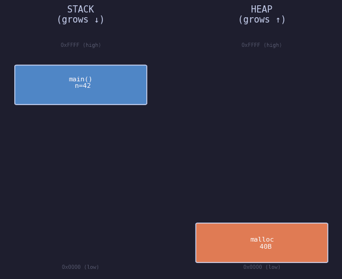
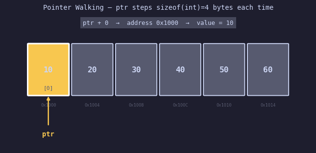
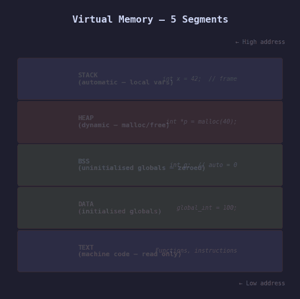
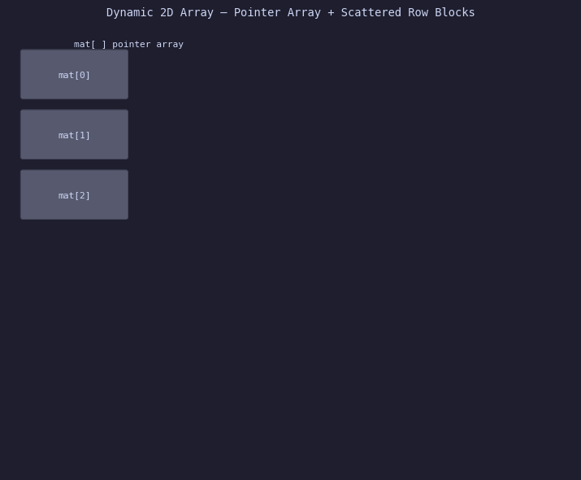

When I started learning CUDA, I kept hitting a wall. Not with the GPU side — with
the C side. Things like float *d_arr, cudaMemcpy,
malloc, pointer offsets — I was copying patterns without understanding
why they worked. So I went back to basics and wrote 10 small C programs, each one
focusing on exactly one memory concept. This is part 1: the four foundational ideas
you absolutely must understand before GPU memory makes sense.
GPU memory is just heap memory on a different chip. If you don't understand CPU heap, you won't understand cudaMalloc.
Program 1 — Stack vs Heap
Every C variable lives somewhere in memory. The two most important locations are the
stack and the heap. The stack is automatic — the
OS manages it, variables appear when you declare them and vanish when the function
returns. The heap is manual — you ask for memory with malloc() and it
stays alive until you call free().

Stack frames are pushed downward as functions are called. Heap blocks grow upward as malloc() is called. They grow toward each other — in the middle is unmapped space.
cudaMalloc is exactly like heap malloc — it gives you a pointer
to device memory that lives until cudaFree.
The program below shows real addresses from both regions at runtime:
#include <stdio.h>
#include <stdlib.h>
int main() {
// STACK — declared as local variable, exists only inside main()
int stack_int = 42;
float stack_float = 3.14f;
// HEAP — requested with malloc(), you control when it ends
int *heap_arr = (int *)malloc(5 * sizeof(int));
for (int i = 0; i < 5; i++) heap_arr[i] = (i + 1) * 10;
printf("stack_int lives at: %p\n", (void*)&stack_int);
printf("stack_flt lives at: %p\n", (void*)&stack_float);
printf("heap_arr lives at: %p\n", (void*)heap_arr);
// Stack addresses will be high (e.g. 0x7fff...)
// Heap addresses will be lower (e.g. 0x562d...)
free(heap_arr); // always free what you malloc
return 0;
}
Run this and look at the addresses. Stack addresses start with 0x7fff
(near the top of virtual memory). Heap addresses look like 0x562d or
0x55a8 — much lower. They really do live in completely different regions.
- Stack overflow happens when you recursively call functions so deep the stack runs out of space
- Memory leak happens when you malloc() but never free() — the heap block stays alive forever
- Never return a pointer to a local (stack) variable — the stack frame is gone when the function returns
Program 2 — Pointer Arithmetic
A pointer is a variable that holds a memory address, not a value.
When you write int *ptr = arr, ptr holds the address of
arr[0]. And here's the crucial bit: ptr + 1 does
not add 1 byte — it adds sizeof(int) = 4 bytes.
The compiler scales pointer arithmetic by the size of the pointed-to type.

The pointer steps right, one element at a time. Each step is sizeof(int) = 4 bytes. The yellow highlight shows the currently-accessed element. arr[i] and *(arr+i) produce identical machine code.
#include <stdio.h>
int main() {
int arr[6] = {10, 20, 30, 40, 50, 60};
int *ptr = arr; // ptr holds address of arr[0]
for (int i = 0; i < 6; i++) {
printf("ptr+%d address=%p value=%d\n",
i, (void*)(ptr + i), *(ptr + i));
}
// arr[i] and *(arr+i) are IDENTICAL — the compiler generates
// the same machine instruction for both
return 0;
}
This matters enormously in CUDA. When you launch a kernel with thousands of threads,
each thread uses its thread ID as an offset: arr[threadIdx.x] is
exactly *(arr + threadIdx.x). Understanding pointer arithmetic is
understanding how GPU threads access memory.
ptr+1 jumps sizeof(type) bytes — not 1 byte. A double* increments by 8. A char* increments by 1. Always.
Program 3 — The 5 Memory Segments
A running C program has five distinct memory regions. Most tutorials only mention stack and heap. But there are three more, and they explain behaviour that otherwise looks like magic.

The five segments appear from low address (bottom) to high address (top). TEXT is read-only machine code. DATA and BSS hold globals. HEAP and STACK are the dynamic regions you interact with most.
// --- DATA segment: globals WITH an initial value
int global_init = 100; // stored in the binary on disk
// --- BSS segment: globals WITHOUT an initial value (OS zeroes them)
int global_uninit; // NOT stored in binary — OS fills with 0 at start
// --- TEXT segment: your compiled functions (read-only)
int add(int a, int b) { return a + b; }
int main() {
int local = 42; // STACK
int *heap = malloc(40); // HEAP
printf("TEXT (code): %p\n", (void*)main);
printf("DATA (global):%p\n", (void*)&global_init);
printf("BSS (uninit):%p\n", (void*)&global_uninit);
printf("HEAP (malloc):%p\n", (void*)heap);
printf("STACK (local): %p\n", (void*)&local);
free(heap);
return 0;
}Run it. You'll see five clearly different address ranges, proving these are genuinely separate regions of virtual memory.
- TEXT — read-only. Writing to it causes a segfault (good — stops code injection)
- DATA — initialised globals like
int x = 5;— their values are baked into the ELF binary - BSS — uninitialised globals — the OS zeroes them so you don't get garbage values
- HEAP — controlled by malloc/free, grows upward
- STACK — automatic locals, grows downward, wiped on return
Program 4 — Dynamic 2D Array
Here's a trap beginners fall into: they think a 2D array is a perfect grid in memory. It isn't. When you allocate a 2D array dynamically with malloc, you get an array of pointers, and each pointer points to a separate row block somewhere on the heap. The rows can be far apart in memory.

The pointer array (left) holds addresses. Each address points to a row data block (right). The rows can land anywhere in the heap — they are NOT contiguous with each other. This is called heap fragmentation.
#include <stdio.h>
#include <stdlib.h>
int main() {
int rows = 3, cols = 4;
// Step 1: allocate the array of row pointers
int **mat = (int **)malloc(rows * sizeof(int *));
// Step 2: allocate each row separately
for (int i = 0; i < rows; i++) {
mat[i] = (int *)malloc(cols * sizeof(int));
printf("Row %d lives at: %p\n", i, (void*)mat[i]);
}
// Those three addresses may be 100s of bytes apart!
// Fill and use
for (int i = 0; i < rows; i++)
for (int j = 0; j < cols; j++)
mat[i][j] = i * cols + j + 1;
printf("mat[1][2] = %d\n", mat[1][2]); // = 7
// Free: rows FIRST, then the pointer array
for (int i = 0; i < rows; i++) free(mat[i]);
free(mat);
return 0;
}
This is why CUDA prefers flat 1D arrays for GPU memory. A contiguous
float *d_arr = cudaMalloc(rows * cols * sizeof(float))
has perfect cache behaviour. Scattered pointers do not.
The free order matters: you must free each row first, then free the pointer array.
If you free mat first, you lose all the row pointers and can never
free the row data — instant memory leak.
What These Four Programs Build Toward
These aren't just C exercises. Every concept maps directly to something you'll encounter in CUDA:
- Stack vs heap →
cudaMallocis heap on the GPU - Pointer arithmetic → GPU thread indexing is pointer offset by
threadIdx - Memory segments → CUDA has its own: global, shared, local, constant, texture memory
- 2D array layout → why CUDA examples always flatten 2D grids to 1D:
row * cols + col